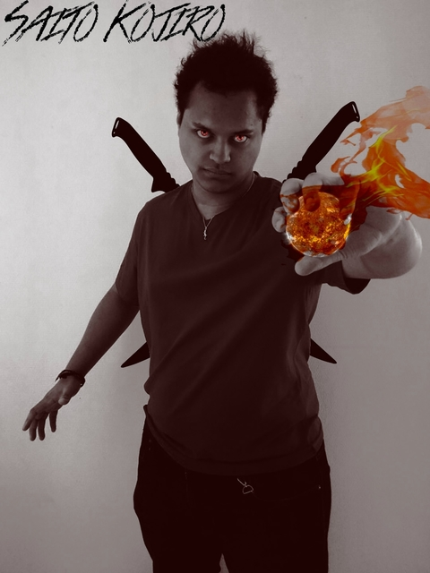
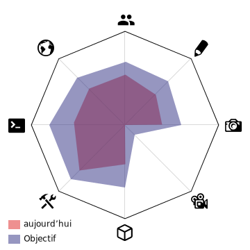

saito kojiro
Joel Lin
classes: Mage, Assassin
race : Humain
Competence: Sort de Feu , double épée / manque de resistance
Caractéristiques :bipolaire, curieux mais plutôt solitaire
Objectifs : la recherche des guerres
